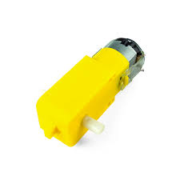
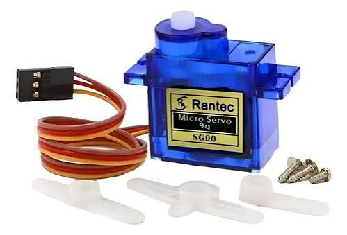

Os componentes de um robô são os elementos físicos e lógicos que permitem sua operação e funcionalidade. Eles incluem sensores, atuadores, microcontroladores e outros dispositivos eletrônicos.
Os atuadores são dispositivos que convertem sinais elétricos em movimento físico, permitindo que o robô interaja com o ambiente. Eles podem ser motores, servomotores, atuadores lineares, entre outros.


O LED é um dispositivo que emite luz quando uma corrente elétrica passa através dele.
O motor é um dispositivo que converte energia elétrica em movimento rotativo.
O servo é um motor com controle de posição, utilizado para movimentos precisos.
O buzzer é um dispositivo que emite som quando uma corrente elétrica é aplicada, sendo utilizado para alertas e sinais sonoros.